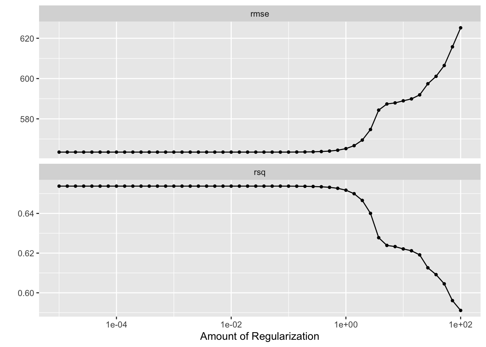

#install.packages("tidymodels")
library(tidymodels)
#install.packages("tidyverse")
library(tidyverse)
#install.packages("ggplot2")
library(ggplot2)
#install.packages("here")
library(here)
#install.packages("glmnet")
library(glmnet)
#install.packages("ranger")
library(ranger)
#install.packages("doParallel")
library(doParallel)
#install.packages("rsample")
library(rsample)
#define seed
rng.seed = 1234Fitting Exercise Week 8
More Processing
The code chunk below loads the cleaned data from fitting-exercise\fitting_exercise.qmd.
#loading data from cleaned data rds
mavoglurant_data_cleaned = readRDS(here("ml-models-exercise", "data", "mavoglurant_data_cleaned.rds"))The following code chunk combines RACE categories \(7\) and \(88\) into a single category, called \(3\).
#combines RACE categories 7 and 88 into new category, 3
mavoglurant_data1 = mavoglurant_data_cleaned %>%
mutate(RACE = case_when(RACE %in% c(7,88) ~ factor(3), .default = RACE)) # %in% is essentialy == 7 | == 88Pairwise Correlation
We would like to remove continuous variables that are correlated with one another, as to not bias our learned models by weighing one variable more heavily due to its correlation with another. The following code chunk generates a pairwise correlation plot for the continuous variables, y, AGE, WT, and HT:
# subset data for continuous variables
mavo_cont = mavoglurant_data1 %>% select(y, AGE, WT, HT)
# generate correlation matrix
correlation_matrix = cor(mavo_cont, use = "pairwise.complete.obs")
## plot correlation matrix as map
cont.corrplot = corrplot::corrplot(correlation_matrix, method = "color", type = "upper")The Height and weight variables are most strongly correlated, with a coefficient around 0.6. Age and height are the next most correlated, with a significantly looser correlation coefficient of -0.4. IF we consider an excessive correlation threshold of 0.9, we need not be concerned that extreme colinearity between our continuous variables will bias the weight assigned each variable of our predictive models.
Feature Engineering
Even though the correlation between HT and WT (height and weight) here isn’t super high, we still expect there to be some colinearity between them. As a result, we’d like to create a new feature that incorporates both of these variables - a new variable, BMI.
While we are unsure of the units of HT and WT - unfortunately, there’s little documentation available to tell us - we can guess from the range of weights (56.6 - 115.3) and heights (1.5 - 1.93) that WT is given in units of kgs and HT is given in units of meters.
We thus use the following equation
\[ BMI = \frac{WT}{HT^2} kg/m^2 \]
to compute the BMI from the height and weight recorded for each observation in the code chunk below:
# calculating BMI and storing as new feature in `mavoglurant_data1` object
mavoglurant_data1 = mavoglurant_data1 %>%
mutate(BMI = WT/(HT^2))
#lets take a look at our BMIs
ggplot() + geom_boxplot(data = mavoglurant_data1, aes(x = BMI))This distribution of BMI around an average of a little under 27 is similar to what we’d expect for North America (add CDC reference later.)
Model Building
In this section, we will be fitting three models:
For the first model, we’ll fit a linear model with all predictor,
for our second model, we’ll use LASSO regression, and
for our third model, we’ll do a random forest (RF).
Note that we will not be doing a training and test split to test the performance of our model. Instead, we will be fitting the entire dataset and performing cross-validation to observe how the model structure itself (not just the parameterization) performs on the data.
First fit: all data = training data
We will be fitting the y outcome to all of our predictor variables using a multiple linear regression model, not considering any interaction between the variables, in the code chunk below:
## recipes
rec_y_all =
recipes::recipe(y ~ .,
data = mavoglurant_data1) %>%
step_normalize(all_numeric_predictors()) %>%
step_dummy(all_nominal_predictors())
## models
# Model 1: choose linear reg model with parsnip package
linear_reg =
parsnip::linear_reg() %>% #linear regression model
parsnip::set_engine("lm") %>% #with lm method
parsnip::set_mode("regression") #mode = regression, mode outcome is numeric
# Model 2: choose lasso model
lasso_mod =
parsnip::linear_reg(penalty = 0.1, mixture = 1) %>%
parsnip::set_mode("regression") %>%
parsnip::set_engine("glmnet")
# Model 3: random forest
rf_mod =
parsnip::rand_forest() %>%
parsnip::set_mode("regression") %>%
parsnip::set_engine("ranger", seed = rng.seed)
## Workflows
# Linear regression
y_multiple_reg_WF =
workflows::workflow() %>% #defining workflow object
workflows::add_model(linear_reg) %>% #choosing the model for the workflow
workflows::add_recipe(rec_y_all) #adding the recipe - which variables for outcome, predictor, any interactions.
# Lasso regression
y_multiple_LASSO_WF =
workflows::workflow() %>%
workflows::add_model(lasso_mod) %>%
workflows::add_recipe(rec_y_all)
# wf regression
y_multiple_rf_WF =
workflows::workflow() %>%
workflows::add_model(rf_mod) %>%
workflows::add_recipe(rec_y_all)# Model 1: linear regression with multiple predictors
# fit the model with the defined workflow
model1 = y_multiple_reg_WF %>% fit(mavoglurant_data1)
# tidy output
tidy(model1) #print result# A tibble: 12 × 5
term estimate std.error statistic p.value
<chr> <dbl> <dbl> <dbl> <dbl>
1 (Intercept) 2217. 199. 11.2 8.45e-20
2 DOSE 1740. 583. 2.99 3.48e- 3
3 RATE -1043. 582. -1.79 7.60e- 2
4 AGE 28.8 66.7 0.432 6.67e- 1
5 WT 1811. 738. 2.46 1.56e- 2
6 HT -1436. 485. -2.96 3.77e- 3
7 BMI -1713. 596. -2.88 4.84e- 3
8 SEX_X2 -415. 208. -1.99 4.89e- 2
9 RACE_X1 268. 213. 1.26 2.11e- 1
10 RACE_X2 396. 222. 1.78 7.78e- 2
11 RACE_X7 NA NA NA NA
12 RACE_X88 NA NA NA NA We have already compared this model to the null model (fitting-exercise/fitting-exercise.qmd), but in general, it is important that we do so to compare the performance of our multi-variable linear model.
The next code chunk fits a LASSO regression to predict y from all other variables in the dataset:
# Model 2: lasso model with multiple predictors
model2 = y_multiple_LASSO_WF %>% fit(mavoglurant_data1)
# tidy output
tidy(model2) #print result# A tibble: 12 × 3
term estimate penalty
<chr> <dbl> <dbl>
1 (Intercept) 2223. 0.1
2 DOSE 1703. 0.1
3 RATE -1005. 0.1
4 AGE 28.4 0.1
5 WT 1708. 0.1
6 HT -1368. 0.1
7 BMI -1630. 0.1
8 SEX_X2 -411. 0.1
9 RACE_X1 260. 0.1
10 RACE_X2 389. 0.1
11 RACE_X7 0 0.1
12 RACE_X88 0 0.1And here, we fit a random forest model:
# Model 3: random forest model with multiple predictors
model3 = y_multiple_rf_WF %>% fit(mavoglurant_data1)
# summarise output
summary(model3) Length Class Mode
pre 3 stage_pre list
fit 2 stage_fit list
post 1 stage_post list
trained 1 -none- logicalHere, we would like to determine the RMSE of each model, and plot the predicted values of y per observation against the true observations.
### create a data frame of y predictions by model
predictions = data.frame(true = mavoglurant_data1$y,
model.1 = predict(model1, new_data = mavoglurant_data1) %>% select(.pred),
model.2 = predict(model2, new_data = mavoglurant_data1) %>% select(.pred),
model.3 = predict(model3, new_data = mavoglurant_data1) %>% select(.pred))
colnames(predictions) = c("true", "model.1", "model.2", "model.3")
# make it ~long form~
predictions_df = predictions %>%
pivot_longer(cols = c("model.1", "model.2", "model.3"),
values_to = "Prediction",
names_to = "Model")
### create a data frame of RMSE by model
RMSE_by_model = data.frame(model = c("model.1", "model.2", "model.3"),
rmse = c(rmse(data = predictions, truth = true, estimate = model.1)$.estimate,
rmse(data = predictions, truth = true, estimate = model.2)$.estimate,
rmse(data = predictions, truth = true, estimate = model.3)$.estimate))
### plot
plot = ggplot() + geom_point(data = predictions_df, aes(x = true, y = Prediction, col = Model)) +
geom_abline(linetype = "dashed") +
annotate(geom = "text", x = 4500, y = c(2000, 1725, 1500), label = paste0(c("model 1 rmse = ", "model 2 rmse = ", "model 3 rmse = "), as.character(RMSE_by_model$rmse))) +
labs(x = "Observed y", y = "Predicted y", "Model Predictions of Training Data vs True Outcome of Training Data")
plotTuning to training data without cross validation
This is a silly thing to do, because we will be tuning our parameters to data and testing our model performance on the same data - which will, of course, lead us to overfit our model.
But we should try anyway, so that we can see what we should expect from overfitting.
Tuning the LASSO model
# defining recipe again in the same section for clarity
rec_y_tune =
recipes::recipe(y ~ .,
data = mavoglurant_data1) %>%
step_normalize(all_numeric_predictors()) %>%
step_dummy(all_nominal_predictors())
# creating resamples object
samples_tune = apparent(mavoglurant_data1)# parallel processing is speedy
doParallel::registerDoParallel()
# setting seed
set.seed(rng.seed)
# updating LASSO model to include penalty
lasso_mod2 = linear_reg(penalty = tune(), mixture = 1) %>%
set_mode("regression") %>%
set_engine("glmnet")
# updating workflow with new model and recipe
#Lasso regression
y_multiple_LASSO_tune_WF =
workflows::workflow() %>%
workflows::add_model(lasso_mod2) %>%
workflows::add_recipe(rec_y_tune)
# define paramater grid - vector here because only one tuning parameter
lambda_grid <- grid_regular(penalty(range = c(-5, 2), trans = transform_log10()), levels = 50)
# tuning model
tuned_model2 = lasso_grid <- tune_grid(
y_multiple_LASSO_tune_WF,
resamples = samples_tune,
grid = lambda_grid
)
# observe the tuning process
LASSO_tune = tuned_model2 %>%
autoplot()
print(LASSO_tune)
Tuning the Random Forest Model
The random forest model has multiple hyperparameters, which makes sense considering the structure of a random forest (decisions need to be made about the strength of the links between nodes, the number of nodes to include, how large a node should be, how many trees to include, etc.)
Here, we will only be tuning two different parameters - the number of variables which can be split at each node, mtry, and the minimum size of a node, min_n. We will manually set the nunber of trees to 300, and keep all other hyperparameters at their default.
# setting seed
set.seed(rng.seed)
# update workflow accordingly
rf_mod2 <- rand_forest(mode = "regression",
mtry = tune(), # allow for tuning of mtry hyperparam
min_n = tune(), # allow for tuning of min_n hyperparam
trees = 300) %>%
set_engine("ranger", seed = rng.seed) # set seed for reproducibility internally
workflow2 <- workflow() %>%
add_recipe(rec_y_tune) %>%
add_model(rf_mod2) # use updated model
# define a 7 by 7 parameter grid
mtry_min_n_grid <- grid_regular(mtry(range = c(1,7)),
min_n(range = c(1,21)),
levels = 7)
# tune the model
tuned_model3 <- workflow2 %>%
tune_grid(resamples = samples_tune,
grid = mtry_min_n_grid)
# observe the tuning process
rf_tune <- tuned_model3 %>%
autoplot()
print(rf_tune)This plot reveals that the lowest RMSE and highest \(R^2\) results from the greater numbers of variables to be split at each node (mtry) and smaller node sizes (min_n). Decreasing either minimum node size or increasing the number of predictors decreases RMSE regardless of the value of the other; that is, a decrease in minimum node size or increase in number of predictors will always lead to a decrease in RMSE. As such, an mtry value of 7 and min_n size of 1 produces the best results.
This is somewhat concerning, especially when coupled with the saturation of \(R^2\) near 0.95 (near perfect) at high numbers of predictors per node and a minimal node size of 1. Of course, using the most parameters and decreasing the size of nodes will result in the closest recapitulation of the data on which the model is trained. But what if we were to train the model with some chosen set of hyperparameters multiple times on all but a little subset of the data multiple times, randomizing which subset gets left out, attempting to recapitulate that test data each iteration, and determining the mean RMSE of the iterations at that parameter set? If we repeated this process with varying sets of hyperparameters (say, from our grid?), which set would get us to the lowest mean RMSE across iterations?
That is essentially the idea behind parameter tuning with cross-validation, and that is what we are going to do in the section below.
Tuning with CV
Here, cross validation will allow us to assess model performance on “unseen” data during the tuning process. To that end, in this section, we will be repeating the tuning procedure with samples created with the vfold_vc() function from the rsamples package.
The following code chunk defines our recipe (again, just for clarity, to keep the pieces of our process altogether and not scattered throughout this document) and generates 5 different folds of our mavoglurant_dat1 dataset on which to preform cross-validation.
# we are about to randomly sample to create our folds, so lets SeT oUr SeEd
set.seed(rng.seed)
# create samples from the entirety of our dataset
folds_tune = rsample::vfold_cv(mavoglurant_data1, 5)
# defining recipe again in the same section for clarity
rec_y_tune =
recipes::recipe(y ~ .,
data = mavoglurant_data1) %>%
step_normalize(all_numeric_predictors()) %>%
step_dummy(all_nominal_predictors())With these defined, we can now apply the cross-validation process to both of our models (LASSO and RF.) We should note that now, we are testing our grid of hyperparameters on each fold, and repeating 5 times to return our mean rmse when predicting the outcome on unseen data for each parameter regime. As such, we would anticipate that the process will take significantly longer to run. Just as before, because this is the same process being run multiple times with different values, we can do our calculations in parallel to help speed things up a little :)
Tuning the LASSO model by cross-validation
The following code chunk preforms cross-validation on our model with multiple hyperparameter values and returns the mean RMSE and \(R^2\) from the predictions generated by the model at each regime:
# parallel processing is speedy
doParallel::registerDoParallel()
# setting seed
set.seed(rng.seed)
# updating LASSO model to include penalty
lasso_mod2 = linear_reg(penalty = tune(), mixture = 1) %>%
set_mode("regression") %>%
set_engine("glmnet")
# updating workflow with new model and recipe
#Lasso regression
y_multiple_LASSO_tune_WF =
workflows::workflow() %>%
workflows::add_model(lasso_mod2) %>%
workflows::add_recipe(rec_y_tune)
# define paramater grid - vector here because only one tuning parameter
lambda_grid <- grid_regular(penalty(range = c(-5, 2), trans = transform_log10()), levels = 50)
# tuning model
tuned_model2 = lasso_grid <- tune_grid(
y_multiple_LASSO_tune_WF,
resamples = folds_tune, #this is the only thing that changes!
grid = lambda_grid
)
# observe the tuning process
LASSO_tune = tuned_model2 %>%
autoplot()
print(LASSO_tune)Here, we can see that the RMSE of the LASSO model increases substantially at large values for the regularization parameter, echoing the results of the tuning process on the entierty of the data. Curiously, however, it appears that at a very large (order of maginitdue 10^2) value, our \(R^2\) increases dramatically. This may be a result of overfitting at these large hyperaparameter values, or a particular exacerabation of a correlation between parameters leading to an overly biased prediction.
The tuning suggests that the smaller the regularlization parameter, the lower the RMSE.
We can also observe that the rmse tends to be greater when cross-validating with folds than when tuning without folds; wimilarly, the \(R^2\) is significantly smaller - the power of our models to predict the same data they are trained on will of course be greater than teh power of the models to predict test data separately from training data.
Tuning the RF model by cross-validation
The following code chunk preforms cross-validation on our model with multiple hyperparameter regimes and returns the mean RMSE and \(R^2\) from the predictions generated by the model at each regime:
# setting seed
set.seed(rng.seed)
# update workflow accordingly
rf_mod2 <- rand_forest(mode = "regression",
mtry = tune(), # allow for tuning of mtry hyperparam
min_n = tune(), # allow for tuning of min_n hyperparam
trees = 300) %>%
set_engine("ranger", seed = rng.seed) # set seed for reproducibility internally
workflow2 <- workflow() %>%
add_recipe(rec_y_tune) %>%
add_model(rf_mod2) # use updated model
# define a 7 by 7 parameter grid
mtry_min_n_grid <- grid_regular(mtry(range = c(1,7)),
min_n(range = c(1,21)),
levels = 7)
# tune the model
tuned_model3 <- workflow2 %>%
tune_grid(resamples = folds_tune,
grid = mtry_min_n_grid)
# observe the tuning process
rf_tune <- tuned_model3 %>%
autoplot()
print(rf_tune)We can see here that there is some trade-off between having a large number of predictors and a small node size. In fact, we see that larger node sizes tend to lead to a lower RMSE than smaller node sizes when the number of predictors per node is high, while minimal node sizes are favored when the number of predictors per node is small. The lowest possible RMSE occurs at a moderate node size and moderate number of predictor splits allowed at a node (mtry = 5 and min_n = 17.)
Had we tuned to the same data with which we generated the model without cross-valdiation, we would have missed this trade-off completely, and chosen a hyperaparameter regime of highest possible mtry and lowest possible min_n, which performs pretty poorly on unseen data.
Conclusion
While tuning to the entirety of the dataset without cross-validation (that is, testing the model’s hyperparameters against unseen data) suggests that the random forest model achieves the lowest rmse compared to the LASSO model (rmse \(\approx\) 350 vs rmse \(\approx\) 560), tuning with repeated challenge from unseen data reveals that the LASSO model has the greater capacity to predict unseen data (rmse \(\approx\) 630 vs rmse \(\approx\) 660.)